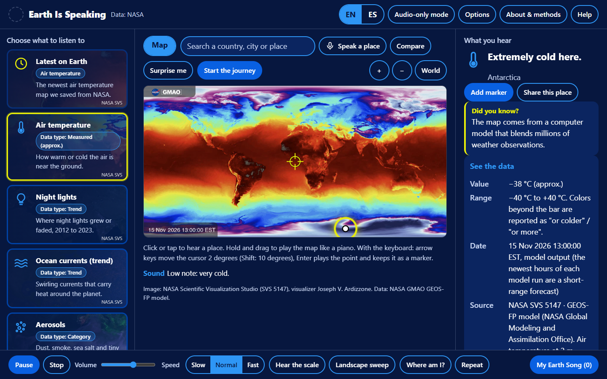
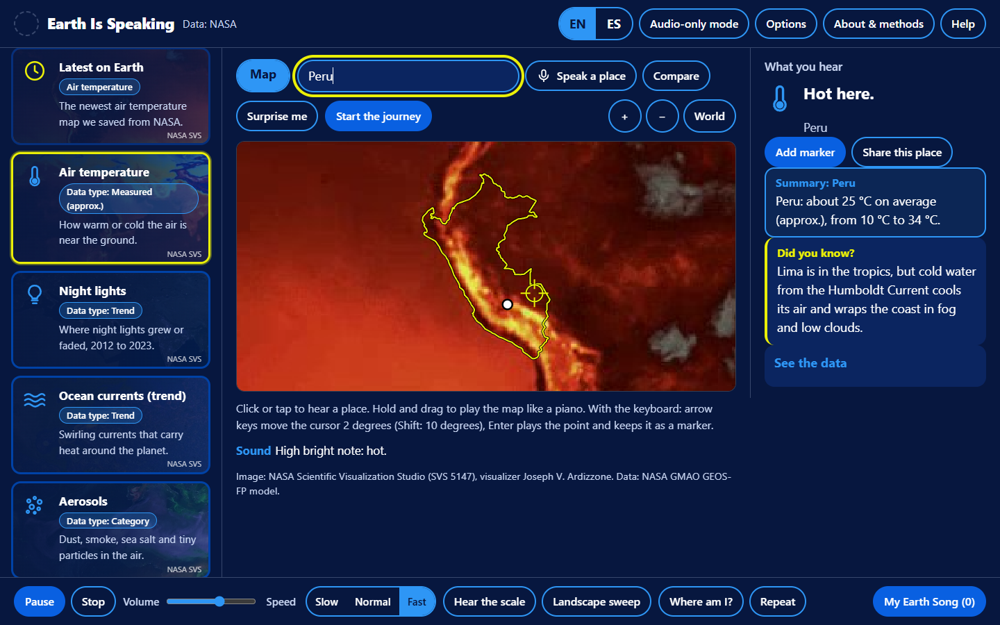
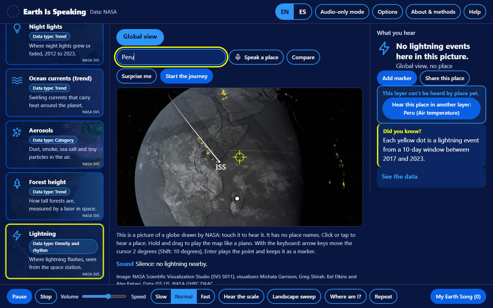
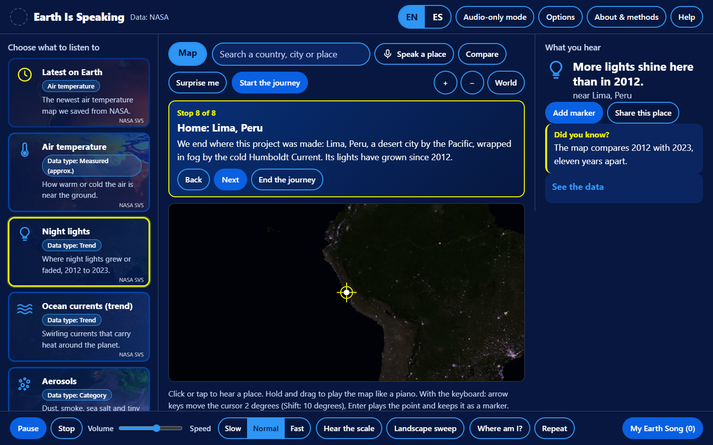
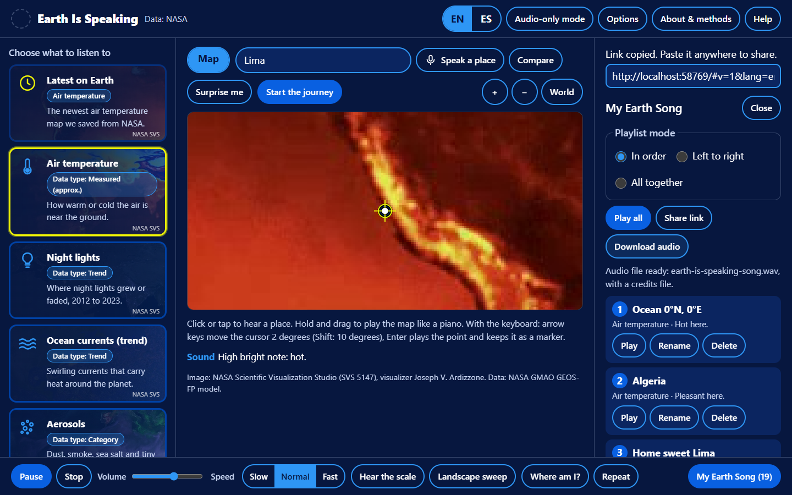

Earth Is Speaking
Listen to our planet
Touch the Earth. Hear what it says.
Team: Houston! We have a playlist
Members: Luis Lazaro Machado
Challenge: The Earth Information Jukebox
NASA Space Apps Challenge 2026 · Local event: Lima, Peru

NASA shows our changing planet in stunning images…
…but images leave many people out.
1,550,196 people in Peru report a permanent difficulty seeing, even with glasses (INEI, Census 2017).
Most Earth-science material, maps and climate stories are visual only.
Our goal
Make NASA Earth data something you can hear: built first for blind and low-vision people, enjoyable for families, schools and everyone, in English and Spanish.
Touch the map. Hear the place.
- Click, tap, drag "like a piano", use arrow keys or your voice ("Lima", "surprise me")
- Low note = cold, high note = hot · rising notes = more night lights · rhythm = lightning
- Every point gets a simple sentence and a checked "Did you know?", read aloud
- Audio-only mode: use it without looking · keyboard only · screen readers
- Visual sound pulse for deaf users · vibration on Android · EN / ES

Six NASA visualizations, turned into sound
| Layer | NASA source | Data type | Sound |
|---|---|---|---|
| Air temperature | SVS 5147 · GEOS-FP (GMAO) | Measured (approx.) | pitch: cold low, hot high |
| Night lights 2012→2023 | SVS 5276 · Black Marble, Suomi NPP VIIRS | Trend | rising / falling interval |
| Ocean currents | SVS 5479 · ECCO-2 (NASA/JPL, MIT) | Trend | pad, brighter = stronger |
| Aerosols | SVS 5669 · GEOS | Category | one instrument per particle |
| Forest height | SVS 4950 · GEDI lidar on the ISS | Trend | low hum → high bell |
| Lightning | SVS 5011 · LIS on the ISS | Density & rhythm | 1–8 drum hits per second |
No AI in the sound: fixed, transparent rules. Data scripts and validation are public on GitHub.
Honest science, by ear
- 99.1% of temperature pixels matched to NASA's color bar; anything else stays silent
- Honest labels: "−40 °C or colder", "approx.", "trend", "few changes detected"
- About 20 km per pixel: never more precision than the data has
- 242 countries: 24 area-uniform points + summary, weighted by cos(latitude); compare two countries
- Fun facts checked against NASA and NOAA pages (unverifiable ones removed)
- Automated WCAG 2.2 AA checks (axe-core): no violations

Stories that connect people


- Guided journey: 8 narrated stops, Antarctica → Sahara → Gulf Stream → Humboldt Current → home in Lima
- My Earth Song: mix places from any layer, play them as a melody or a chord, download as audio with NASA credits
- Sound postcards: send a place; your friend answers with theirs ("my city and yours"). No accounts, no server: it all travels in the link
What comes next
- Test with blind students and associations in Lima; classroom guides in Spanish
- More NASA layers and raw datasets for finer values; a 3D pixel globe
- More languages, an offline mode for schools, museum and science-center installations
When the Earth speaks, everyone can listen.
App: luislazaromachado.github.io/earth-is-speaking
Code & data scripts: github.com/LuisLazaroMachado/earth-is-speaking